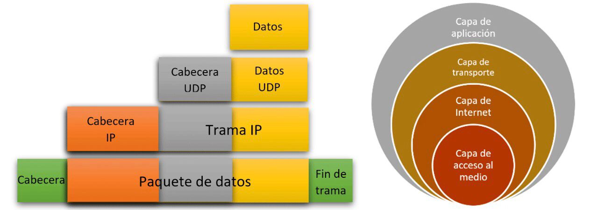
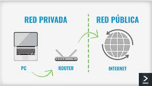
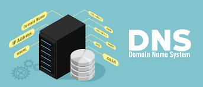

Practica No.1 - Conceptos
Dirección IP
La dirección IP es un conjunto de números que identifica, de manera lógica y jerárquica, a una interfaz en la red de un dispositivo ya sea computadora, laptop, teléfono inteligente que utilice el protocolo, que corresponde al nivel de red del modelo TCP/IP. Pero en si, La dirección IP, IP es un acrónimo para Internet Protocol que es un conjunto de números que identifica, de manera lógica y jerárquica, a una interfaz en la red de un dispositivo que utilice el protocolo o, que corresponde al nivel de red del modelo TCP/IP.
Tipos de Direcciones IP
Una dirección IP se conforma por cuatro grupos de entre 1 y tres dígitos separados por puntos, tienen una longitud de 32 bits y constan de dos campos, uno que es el identificador de red y corresponde con el primer grupo de números, y el identificador de host, que son los otros tres grupos restantes. Por ejemplo: 192.158.1.38.
Rangos
- Clase A: 10.0.0.0 a 10.255.255.255.
- Clase B: 172.16.0.0 a 172.31.255.255.
- Clase C: 192.168.0.0 a 192.168.255.255
Mascaras de Red
La máscara de red es una combinación de bits que sirve para delimitar el ámbito de una red de ordenadores. Su función es indicar a los dispositivos qué parte de la dirección IP es el número de la red, incluyendo la subred, y qué parte es la correspondiente al host.
Clases
- Clase A: el primer octeto indica la dirección de red, y los últimos tres octetos son la parte del host. Cualquier dirección IP cuyo primer octeto esté entre 1 y 126 es una dirección de clase A. Cabe destacar que 0 se toma en cuenta como parte de la dirección predeterminada y 127 para las pruebas internas de loopback.
- Clase B: los dos primeros octetos indican la dirección de red, y los últimos dos octetos son la parte del host. Cualquier dirección cuyo primer octeto esté en el rango de 128 a 191 es una dirección clase B.
- Clase C: los tres primeros octetos indican la dirección de red, y el último octeto es la parte del host. El rango del primer octeto de 192 a 223 es una dirección de clase C.
- Clase D: este tipo de clase se utiliza para multicast. Las direcciones IP de multidifusión tienen sus primeros octetos en el rango de 224 a 239.
- Clase E: utilizados para uso futuro e incluye el rango de direcciones con un primer octeto de 240 a 255.
MAC Address
La Mac Address o dirección Mac es un identificador único de 48 bits para identificar la totalidad de dispositivos de red. A veces se conoce como la dirección grabada o la dirección de hardware Ethernet, tarjetas de red wifi o inalambricas, Switch de red, Routers, impresoras, etc. Entre sus aplicaciones se encuentran las redes inalámbricas Ethernet, 802.11 y Bluetooth.
ISP
Un ISP o Proveedor de Servicios de Internet (Del inglés Internet Service Provider), es el término con el que se identifica a las compañías que proporcionan acceso a Internet esto quiere decir que, para conectarse a un ISP, necesita un módem y una cuenta activa. Cuando conecta un módem al teléfono o salida de cable en su casa, se comunica con su ISP. El ISP verifica su cuenta y le asigna a su módem una dirección IP.
Puertos bien conocidos
En las redes que utilizan los protocolos TCP/IP y UDP/IP, cuando un programa cliente necesita de un servicio particular de un servidor, además del tipo de servicio y localización del servidor, debe indicar el puerto por el que se establecerá la conexión. En este sentido, un puerto es un extremo de una conexión lógica. Los puertos se identifican por números, y cuando los servicios se refieren a la Web, van incluidos en la sintaxis de la mayoría de las URLS.
Protocolo TCP/IP
Es un conjunto de reglas de red que hacen posible la transferencia de datos en redes, entre equipos informáticos e internet. El modelo TCP/IP permite un intercambio de datos seguro dentro de una red, definiendo los pasos a seguir desde que se envían los datos hasta que son recibidos. Para lograrlo utiliza un sistema de capas con jerarquías (se crea una capa a continuación de la anterior) que se comunican únicamente con su capa superior (a la que envía resultados) y su capa inferior (a la que solicita servicios).

Redireccionanimiento
de Puertos
La redirección de puertos es la acción de redirigir un puerto de red de un nodo a otro. Esta técnica puede permitir que un usuario externo tenga acceso a un puerto en una dirección IP privada desde el exterior vía un router con NAT activado. La redirección de puertos permite que computadoras remotas (por ejemplo, máquinas públicas en Internet o de empresa) se conecten a un computador especifico dentro de una LAN privada.
Servidor de Paginas WEB
Son tipos de servidores utilizados para la distribución de contenido web. Como parte de una red de ordenadores, un servidor web transfiere documentos a los llamados clientes, por ejemplo, una página web a un explorador. El protocolo utilizado para la transmisión es HTTP, que se basa, en los protocolos de red IP y TCP. Un servidor web puede entregar los contenidos a varios ordenadores o navegadores web. La cantidad de solicitudes y la velocidad con la que pueden ser procesadas depende del hardware y la carga del host.
Puerta de Enlace
Puede ser un enrutador, cortafuegos, servidor o cualquier otro dispositivo
que permita que el tráfico fluya dentro y fuera de la red. Está configurado
para aportar a los PC que integran dicha red, generalmente utilizando para
ello operaciones de traducción de direcciones IP.
El gateway o puerta de enlace es normalmente un equipo informático configurado
para dotar a las máquinas de una red local (LAN) conectadas a él de un acceso
hacia una red exterior, generalmente realizando para ello operaciones de traducción
de direcciones IP. Esta capacidad de traducción de direcciones permite aplicar una
técnica llamada IP Masquerading (enmascaramiento de IP), usada muy a menudo para dar
acceso a Internet a los equipos de una red de área local compartiendo una única conexión
a Internet, y por tanto, una única dirección IP externa.
Direccion IP Privada y Publica

Direccion IP Privada
Esta es utilizada para identificar un dispositivo dentro de una red privada, por ejemplo, la que creas al conectar tu smartphone, la impresora, la tablet, y la laptop a una misma red de WiFi en tu hogar, o bien, las redes utilizadas a nivel empresarial
- Clase A: De 10.0.0.0 a 10.255.255.255, que son utilizadas generalmente para grandes redes privadas, por ejemplo, de alguna empresa trasnacional.
- Clase B: De 172.16.0.0 a 172.31.255.255, que son usadas para redes medianas, como de alguna empresa local, escuela o universidad.
- Clase C: 192.168.0.0 a 192.168.255.255, que son usadas para las redes más pequeñas, como redes domésticas.
Direccion IP Publicas
Éstas son indispensables para conectarse a internet, y son visibles para cualquier internauta, y suele ser la que tiene tu router o tu módem. Como mencionamos anteriormente, éstas pueden ser a su vez fijas o dinámicas. Te presentamos cada una:
DNS
El sistema de nombres de dominio o Domain Name System o DNS es un conjunto de protocolos y servicios que permite a los usuarios utilizar nombres en lugar de tener que recordar direcciones IP numéricas. Su función más importante es "traducir" nombres inteligibles para las personas en identificadores binarios asociados con los equipos conectados a la red, esto con el propósito de poder localizar y direccionar estos equipos mundialmente.

Firewall
Un firewall es un sistema de seguridad para bloquear accesos no autorizados a un ordenador mientras sigue permitiendo la comunicación de tu ordenador con otros servicios autorizados. Permite el tráfico entrante y saliente que hay entre redes u ordenadores de una misma red. Si este tráfico cumple con las reglas especificadas podrá acceder y salir de nuestra red sin ningún problema, si no las cumple este tráfico será bloqueado. De esta manera impedimos que otras personas no autorizadas accedan a nuestras redes privadas conectadas a internet
WebHosting
El WebHosting es el espacio donde se almacena la información y datos de nuestro Sitio Web. El WebHosting básicamente es el espacio en un servidor que necesitas para construir tu Sitio Web, pero además tiene otro tipo de servicios. Provee a los usuarios de Internet un sistema para poder almacenar información, imágenes, vídeo, o cualquier contenido accesible vía web.
Dominio
Un dominio de Internet es una red de identificación asociada a un grupo de dispositivos o equipos conectados
a la red Internet.
El propósito principal de los nombres de dominio en Internet y del sistema de nombres de dominio DNS, es
traducir las direcciones IP de cada nodo activo en la red, a términos memorizables y fáciles de encontrar.
Esta abstracción hace posible que cualquier servicio de red pueda moverse de un lugar geográfico a otro
en la red Internet, aun cuando el cambio implique que tendrá una dirección IP diferente.
FTP
Este protocolo de red llamado Protocolo de Transferencia de Archivos es una de las formas en la cual
podemos enviar archivos hacia una Red TCP en la que utilizaremos la clásica arquitectura de Cliente – Servidor.
Los archivos se suben desde un cliente FTP a un servidor FTP donde una aplicación o cliente pueden accederlos.
El servidor FTP funciona con un daemon que está pendiente de solicitudes FTP de clientes.
El equipo cliente, en este marco, se conecta al servidor mediante el FTP con el objetivo de enviar o descargar
archivos. Este protocolo busca maximizar la velocidad, sin apelar al cifrado para proteger la información. Por
eso muchas veces se recurre a aplicaciones que posibilitan la transferencia del material pero con el tráfico cifrado.
Gracias al FTP, se pueden comunicar dos computadoras (ordenadores) que no utilizan el mismo sistema operativo.
Eso es posible que ya que las entidades en comunicación emplean el mismo protocolo que ya está estandarizado.
HTML
HTML hace referencia al lenguaje de marcado para la creación de páginas web. Es un estándar
que sirve de referencia del software que conecta con la elaboración de páginas web en sus
diferentes versiones, se crea una estructura básica y un código para la definición de contenido
de una página web, como texto, imágenes, videos, juegos, entre otros.
Al día de hoy existen los Editores Web que permiten que los diseñadores, a través de herramientas
gráficas que reciben el nombre de WYSIWYG puedan crear páginas web sin conocer el código html,
este se crea de forma automatizada, dándole estructura a la web y permitiendo que sea más allá
del ordenador donde es creada. Entre los recursos que pueden enlazarse al código HTML se encuentran
fotografías, vídeos, archivos de otras webs o incluso de la misma y todo tipo de contenido que se encuentre
subido a la red.
CSS
CSS es lo que se denomina lenguaje de hojas de estilo en cascada y se usa para dar estilo a
los elementos escritos en un lenguaje de marcado como HTML. CSS separa el contenido de la
representación visual del sitio. La relación entre HTML y CSS es muy fuerte, dado que HTML
es un lenguaje de marcado y en CSS destaca el estilo, van de la mano.
El diseño del CSS posibilita establecer una separación entre el contenido y la forma de
presentación del documento.br
Así se puede lograr que muchos documentos HTML compartan la apariencia, utilizando una
única hoja de estilo para todos. Gracias a esta
particularidad, se evita tener que repetir el código en la estructura.
Gracias a la separación del contenido y la forma de presentación, por otra parte, se puede
apelar a distintos estilos de acuerdo al método de renderizado: si se trata de un documento
exhibido en una pantalla, impreso, compartido en formato de audio, etc.

Conclusiones individuales
Emmanuel Enrique Larraga Bueno
En conclusion esta practica me enseño las distintas formas en las que se puede conformar unaa
pagina web, ya sea para acomodar el texto, centrarlo, cambiar la fuente, cambiara color etc.
Ademas que tambien me ayudo mucho a darme una idea de como se conforma una
estructura y como se edita una pagina web y en cuestion de la programacion de la
pagina aprendi bastantes sintacis o grases especiales para editar la pagina esto haciendo
uso de html y css. Ademas que tambien me ayudo a familiarizarme mas con la idea de programar
y como construir una pagina desde 0.
Alan Guillermo Ramos Zavala
La práctica me ayudo a reforzar algunos conceptos que ya tenía conocimiento gracias a otras clases, pero también me ayudo a darme cuenta de lo que se necesita y lo que es primordial para poder realizar una página web. En lo que más aprendí fue en el CSS, ya que tenía el aprendizaje básico, pero nunca lo había investigado a fondo y ahora ya tengo mejor conocimiento para en un futuro no batallar tanto en la creación de una página web.
Adrian Fuentes Mendoza
Durante esta Practica logramos aprender como llevar a cabo el trabajo, en cierto tiempo tuvimos dificultad en cuanto a organización y tiempos, pero logramos estabilizar ese problema y llevarlo a cabo, otro factor también fue la parte creativa o de diseño, ya que la mayoría no se nos daba muy bien ese detalle, pero nuevamente pudimos superarlo y realizar la practica, y en cuando a la página como sí, aprendimos mucho sobre su estructura y como organizar la información en orden y sin alterar su esquema, sin duda aprendimos mucho de esta practica lo cual nos servirá para poder seguir realizando exitosamente las demás practicas por venir.
Isaias Jair Solano Peral
Como conclusión personal puedo decir que esta primera practica fue cierto reto a la hora de encontrar un forma de trabajar en equipo, la investigación de los conceptos que se realizaron nos sirvió para complementar los conocimientos que teníamos de los conceptos, personalmente puede aprender nuevos conceptos y conocimientos mas profundizados de algunos términos como el IP. Para poder crear la pagina tuvimos que repasar los conocimientos que teníamos de html , en mi caso demasiado básicos, aun así se busco apoyar a los mas experimentados en la creación de la pagina donde pude aprender nuevos conocimientos de html .Esta practica aunque de cierta forma simple fue un acercamiento a nuevas experiencias del desarrollo web como por ejemplo, el hospedaje de la pagina en el hosting. Me llevo varios aprendizajes que aunque básicos son esenciales para poder trabajar con las practicas siguientes.
Enrique Escobedo Adame
La practica me enseño a entender para que funcionan los diferentes conceptos que existen en para crear una pagina web utilizando el lenguaje HTML y CSS al igual entendiendo el como funciona las redes par amontar una pagina web. También entendiendo la estructura y forma para realizar diferentes proyectos